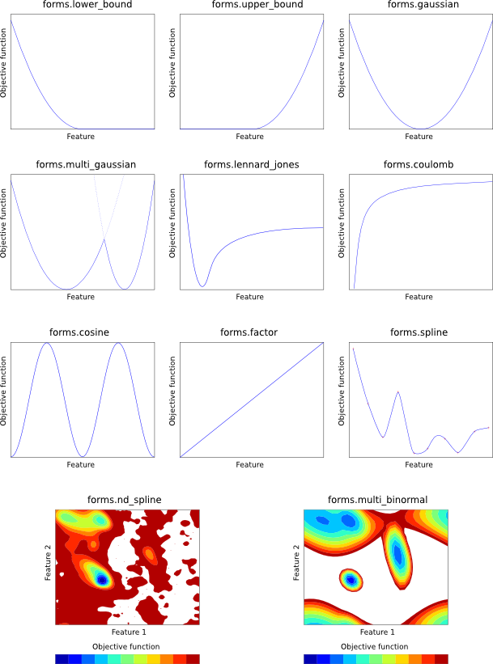

Dynamic restraints are created on the fly, and currently include:
Static restraints can be added with the Restraints.add() command, or can be read from a restraints file (see Section B.2). Collections of static restraints useful for various purposes (e.g. for restraining all bond lengths or angles, or for using template information) can also be automatically generated with the Restraints.make() command.
Each static restraint is formulated as a mathematical form (e.g. a Gaussian function) which acts on one or more `features' of the model (e.g. a bond length). Any feature can be used with any mathematical form, with the exception of forms.multi_binormal, which generally only works properly with features.dihedral. Both feature types and mathematical forms are described below.
Each feature is a Python class, which takes a defined number of atom ids as input. Each of these atom ids can be:
Features can be any of the classes in the features module (see below) or you can create your own classes; see Section 7.1.
features.distance(*atom_ids)
Distance in angstroms between the given two atoms.
features.angle(*atom_ids)
Angle in radians between the given three atoms.
features.dihedral(*atom_ids)
Dihedral angle in radians between the given four atoms.
features.minimal_distance(*atom_ids)
Given an even number of atoms, this calculates the distance between the
first two atoms, the third and fourth, and so on, and returns the shortest
such pair distance, in angstroms.
features.solvent_access(*atom_ids)
Area (in  ) exposed to solvent of the given atom. Note that this
feature cannot be used in optimization, as first derivatives are always
returned as zero.
) exposed to solvent of the given atom. Note that this
feature cannot be used in optimization, as first derivatives are always
returned as zero.
features.density(*atom_ids)
Atomic density (number of atoms within contact_shell of the given atom).
Note that this feature cannot be used in optimization, as first derivatives
are always returned as zero.
features.x_coordinate(*atom_ids)
Value of the x coordinate (in angstroms) of the given atom.
features.y_coordinate(*atom_ids)
Value of the y coordinate (in angstroms) of the given atom.
features.z_coordinate(*atom_ids)
Value of the z coordinate (in angstroms) of the given atom.
features.dihedral_diff(*atom_ids)
Difference in radians between two dihedral angles (defined by the first four
and last four atoms).
Each of the mathematical forms is depicted in Figure 5.1.
forms.lower_bound(group, feature, mean, stdev)
Harmonic lower bound (left Gaussian). The given feature is harmonically
restrained to be greater than mean with standard deviation stdev. See
Eq. A.81.
forms.upper_bound(group, feature, mean, stdev)
Harmonic upper bound (right Gaussian). The given feature is harmonically
restrained to be less than mean with standard deviation stdev. See
Eq. A.82.
forms.gaussian(group, feature, mean, stdev)
Single Gaussian (harmonic potential). The given feature is harmonically
restrained to be around mean with standard deviation stdev. See
Eq. A.62.
forms.multi_gaussian(group, feature, weights, means, stdevs)
Multiple Gaussian. The given feature is restrained by a linear combination
of Gaussians. weights, means and stdevs should all be lists (of
the same size) specifying the weights of each Gaussian in the linear
combination, their means, and their standard deviations, respectively. See
Eq. A.65.
forms.factor(group, feature, factor)
Simple scaling. The given feature value is simply multiplied by
factor to yield the objective function contribution.
forms.lennard_jones(group, feature, A, B)
Lennard-Jones potential. The given feature is restrained by means
of a Lennard-Jones potential, with control parameters A and B. See
Eq. A.89.
forms.coulomb(group, feature, q1, q2)
Coulomb point-to-point potential. The given feature is restrained by means
of an inverse square Coulomb potential created by charges q1 and q2.
See Eq. A.86.
forms.cosine(group, feature, phase, force, period)
Cosine potential. The given feature is restrained by a CHARMM-style
cosine function, with the given phase shift, force constant and periodicity.
See Eq. A.83.
forms.multi_binormal(group, features, weights, means, stdevs, correls)
The given two features (generally both features.dihedral) are simultaneously
restrained by a multiple binormal restraint. weights, means, stdevs
and correls should all be lists (of the same size). weights specifies
the weights of each term in the function. means and stdevs give the mean
and standard deviation of each feature for each term, and each element should
thus be a 2-element list. correls gives the correlation between the two
features for each term. See Eq. A.75.
forms.spline(group, feature, open, low, high, delta, lowderiv, highderiv, values)
Cubic spline potential. The given feature is restrained by an interpolating
cubic spline, fitted to values, which should be a list of objective function
values. The first element in this list corresponds to feature value low,
the last to feature value high, and points in the list are taken to be
equally spaced by delta in feature space. The spline can either be open
(open = True) in which case the first derivatives of the function
at the first and last point in values are given by lowderiv and
highderiv respectively, or closed (open = False) in which case
lowderiv and highderiv are ignored. A closed spline 'wraps around'
in such a way that feature values low and high are taken to refer
to the same point, and is useful for periodic features such as angles.
See Eq. A.96.
forms.nd_spline(group, values)
Multi-dimensional cubic spline potential. The given feature is restrained
by an interpolating multi-dimensional cubic spline, fitted to values,
which should be an N-dimensional list of objective function values. (For
example, for a 2D spline, it should be a list of lists. The outer list goes
over the second feature, and contains one or more rows, each of which is a list
which goes over the first feature.) After
creating the object, you should then call the 'add_dimension' function
N times:
nd_spline.add_dimension(feature, open, low, high, delta, lowderiv, highderiv)
This initializes the next dimension of the multi-dimensional cubic spline.
Parameters are as for 'forms.spline()', above. Note that lowderiv and
highderiv are used for every spline, for efficiency. (For example, in an
x-by-y 2D spline, there will be 'x' splines in the second dimension, each
of which could have its own lowderiv and highderiv, but one pair of
values is actually used for all 'x' of these splines.)
|

|
When MODELLER optimizes the objective function, the aim is to fulfill all of the restraints as well as possible. In complex cases, this will be difficult or impossible to do, and some of the restraints will not be optimal. In this case, MODELLER reports the deviation of each restraint from the optimum as a `violation'. There are four kinds of restraint violation used by MODELLER:
Equations for relative heavy violations for most mathematical forms are given in Section A.3.2.